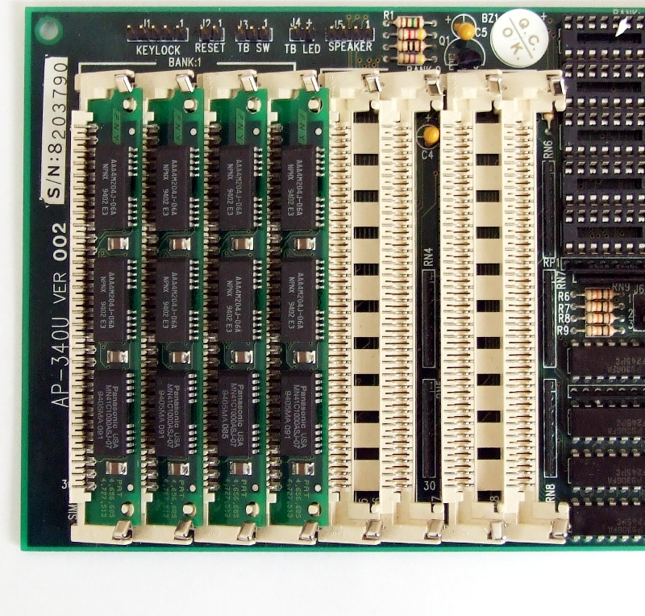

Descomposició en classes i biblioteques
A l’hora de crear una unitat didàctica o un llibre, estructurar-la en apartats o capítols permet que sigui molt més fàcil plantejar els seus continguts, des del punt de vista de l’autor, i seguir o comprendre, des del punt de vista del lector (o el mateix autor, si en el futur vol fer esmenes). Ara bé, per molt ordenada que sigui aquesta estructura, a mesura que creix la mida del document, tard o d’hora arribarà el moment que caldrà plantejar-se si més aviat el que resulta necessari és començar una nova unitat o un nou volum. Un document massa llarg es fa feixuc i difícil de gestionar. Quan això succeeix, normalment la divisió es plantejarà de manera que cada unitat o volum correspongui a una temàtica i resultats d’aprenentatge concrets.
En aquest sentit, i com ja heu vist, un programa no és gaire diferent. La seva subdivisió en diferents mètodes a partir de l’aplicació del disseny descendent permet tenir codi endreçat i polit, molt més fàcil tant de crear com d’entendre. Addicionalment, també permet reusar codi útil en diferents parts del programa, en lloc d’haver de reescriure’l diverses vegades. Ara bé, també de la mateixa manera, si el programa és complex i acaba requerint de molts mètodes, la quantitat de mètodes de tota mena i la mida del seu fitxer també pot arribar a ser considerable.
- Un programa monolític és com un bloc de pedra, fet d'una sola peça. Font: Richard-sr
Una solució que permeten molts llenguatges de programació és seguir exactament el camí de l’analogia plantejada: dividir el codi del programa en diferents parts, d’acord a una temàtica concreta.
Un programa modular és aquell que s’ha desenvolupat dividint-lo en components fàcils de modificar i intercanviar, anomenats mòduls. Cada mòdul agrupa un conjunt de funcions o mètodes que realitzen tasques relacionades.
En contraposició a un programa modular, hi ha els programes monolítics, en els quals tot el codi es concentra en un únic mòdul. Normalment, en el cas de programes complexos, se sol considerar un mal hàbit fer programes monolítics.
Programes amb múltiples classes
La manera més directa de fer un programa modular és establir una correspondència un a un entre mòduls i fitxers on està escrit el codi font d’un programa. Per tant, cada mòdul es representa amb un fitxer de codi font diferent. Aquesta aproximació es pot usar en molts llenguatges de programació. En el cas de Java, un programa modular està compost de l’agregació de múltiples classes, en lloc de només una com heu treballat fins ara.
Què és realment una classe?
Abans de veure com és possible fer un programa modular, val la pena recapitular sobre el concepte de “classe” i la seva aplicació dins dels programes que es desenvolupen en Java. Si bé una definició estricta i formal d’aquest concepte està molt vinculada a l’orientació a objectes, i per tant més enllà de l’àmbit d’aquest temari, si feu recull de tots els cops que s’ha usat des d’una perspectiva pràctica, us adonareu que ha estat per referir-se a tres coses.
- Un programa en Java. D’una banda, els fitxers dels vostres programes, pròpiament, són classes (al cp i a la fi, s’inicien amb la declaració
public class…). En aplicar disseny descendent, el seu codi queda distribuït en un mètode principal (main), que indica la seva primera instrucció i el punt d’inici del seu flux de control, junt amb diferents mètodes addicionals que poden ser invocats directament. - Un repositori de mètodes. D’altra banda, també s’ha usat el terme classe per referir-se a biblioteques de mètodes, que actuen com extensions en les instruccions disponibles per defecte en el llenguatge. Abans de poder fer-ho, però, cal inicialitzar-les correctament. L’exemple més clar és la classe
Scanner, que ofereix un repertori de mètodes per controlar la lectura de dades des del teclat (nextLine(),nextInt(),hasNextFloat(), etc.). - Un tipus compost. Finalment, aquest mateix terme s’ha usat com a sinònim de tipus compost. En aquest cas, l’exemple per antonomàsia és la classe
String, utilitzada per referir-se a cadenes de text dins de Java. Els tipus compostos de Java permeten manipular dades complexes mitjançant la invocació de mètodes (charAt(…),indexof(…), etc.).
Si us hi fixeu, en tots tres casos hi ha un factor comú. Tots disposen d’un conjunt de mètodes que és possible invocar. I és que, en realitat, tot i les seves diferències en el context sota el qual s’usen i la manera d’invocar els seus mètodes, els tres casos són exactament el mateix en darrera instància: codi font dins un fitxer anomenat NomClasse.java, amb la declaració public class NomClasse…, i estructurat com un seguit de mètodes declarats dins seu.
El codi font de Scanner i String està disponible a la pàgina de descàrregues d’Oracle (Java SE 6 JDK Source Code). Ara bé, no és pas senzill d’entendre!
Per tant, tot i que no sabeu exactament quin és el seu codi font al complet, està clar que la classe Scanner ha estat desenvolupada per algú altre, dins d’un fitxer anomenat Scanner.java, i una part del seu codi és:
El mateix passa amb la classe String (amb les definicions dels seus propis mètodes):
Estructura d'un programa modular en Java
Un cop s’ha vist que totes les classes, independentment del seu rol, en realitat es codifiquen de la mateixa manera (com fitxers que contenen un seguit de mètodes que poden ser invocats), és el moment de veure com es relacionen a escala general per generar un programa modular.
Primer de tot, es recapitularà també sobre què és un programa, preveient tots els nous elements que heu anat aprenent. Recordeu que un programa no és més que una seqüència ordenada d’instruccions que es van executant d’inici a fi. Aquesta seqüència té certes particularitats, ja que mitjançant les estructures de control (selecció i repetició), és possible crear bifurcacions o bucles a la seqüència. A més a més, per a programes complexos, també es poden trobar invocacions a mètodes, fent possible distribuir les instruccions en blocs diferents, que poden ser executats repetides vegades en diferents moments del procés. Tots aquests mètodes estan escrits dins un mateix fitxer, que conté el codi font de tot el programa. D’entre tots els mètodes, hi ha el principal (main), el qual indica quina és la primera instrucció.
Doncs bé, l’única diferència d’un programa modular en Java és que els mètodes, en lloc d’estar escrits tots en el mateix fitxer, estan distribuïts dins de diferents fitxers (diferents classes), tal com es contrasta a la figura. Fixeu-vos que només canvia on estan escrits físicament els mètodes, però el flux de control, amb l’ordre d’execució de les instruccions i invocació dels mètodes, és exactament el mateix. En aquest exemple, el programa modular es composaria de tres fitxers diferents, anomenats Principal.java, Modul1.java i Modul2.java.
Normalment, l’escriptura de mètodes en fitxers separats no és arbitrària, sinó que se sol fer d’acord a algun criteri d’ordre, com agrupar mètodes per funcionalitats semblants (una classe amb els mètodes relacionats amb operar amb arrays, una altra amb els que llegeixen dades des del teclat, etc.). Per tant, el quid de la qüestió per fer un programa modular és ser capaç de decidir amb criteri com distribuir els diferents mètodes en diferents classes (i en quantes) i saber com invocar mètodes declarats a altres classes.
D’entre totes les classes que composen un programa modular en Java, hi ha d’haver una d’especial, a la qual se sol referir com a classe principal (Main class). Aquesta és l’única, d’entre totes, que disposa d’un mètode principal declarat en el seu codi (la resta no el tenen). A la figura, Principal.java seria la classe principal. Per executar un programa modular en Java, només cal executar aquesta classe principal. A partir d’aquí, l’execució de les diferents instruccions segueix el flux de control habitual, partint del mètode principal d’aquesta classe, tal com s’ha mostrat a la figura.
Els IDE solen distingir gràficament el fitxer de la classe principal amb alguna icona especial.

Els mètodes main i inici
Donat el tipus de plantilla que s’usa en aquests materials per poder fer classes amb mètodes, a la classe principal hi ha d’haver tant el mètode main com el mètode inici. Cap dels dos és necessari a la resta de classes.
Les classes addicionals dins un programa modular, que no són la principal, normalment tenen dos orígens. Poden ser classes creades per vosaltres mateixos, o bé creades per altres desenvolupadors. En qualsevol dels dos casos, totes estan declarades i codificades en fitxers .java per separat.
Definició i ús de classes addicionals
Com acabeu de veure, és possible dividir el codi dels vostres programes en diferents classes, en lloc de tenir-lo en una de sola. Atès que és el cas més senzill, aquesta secció se centrarà en la definició de classes addicionals que es comporten simplement com repositoris de mètodes, i no és el cas dels tipus compostos.
Primer de tot, cal establir un criteri general sota el qual decidir quan val la pena dividir els mètodes d’un programa entre diferents classes. Normalment, un primer criteri molt bàsic que us ha de fer pensar a aplicar modularitat és trobar-se davant d’un programa amb un fitxer de codi font llarg, on hi ha molts mètodes. Ara bé, el més important de tots és identificar mètodes que realitzen tasques del que es podria considerar una mateixa temàtica i que creieu que el seu codi us pot ser d’utilitat en el futur per a altres programes que genereu.
Com a fil argumental per veure tot plegat, vegeu un exemple concret no gaire complex. Suposeu un programa per dur a terme algunes operacions típiques (màxim, mínim i mitjana) sobre el conjunt de notes d’una classe. Per centrar l’exemple en l’aspecte important ara, generar un programa dividit en diferents classes, s’obviaran detalls com la interfície (entrada des del teclat, menús, etc.).
El programa tal com es podria plantejar directament partint d’una descomposició per disseny descendent, podria ser el que es mostra tot seguit:
Tot i no ser un programa molt llarg, s’aplicarà modularitat. D’entrada, una característica que sí que es pot identificar és el fet que hi ha tres mètodes de temàtica similar: fer operacions típiques basades en recorreguts sobre arrays de reals (calcularMaxim, calcularMinim, calcularMitjana). Aquesta mena d’operacions són molt generals i de ben segur que se solen usar en diferents programes. Per tant, pot tenir sentit declarar-los en una classe a part que serveixi com un repertori general de mètodes per treballar amb arrays de reals.
Definició de classes addicionals
Per dividir un programa en classes diferents, només cal crear tants fitxers com classes es vol, cadascun amb el seu nom i definició pròpia, tal com heu fet fins ara. D’entre totes elles alguna haurà de ser la classe principal (en aquest cas, que contingui com a mínim els mètodes main i inici). La resta contindrà els mètodes que es vulgui distribuir.
Si a l’exemple volem que RegistreNotes sigui la classe principal i declarar els tres mètodes per treballar amb arrays de reals en una nova classe anomenada CalculsArrayReals, caldria crear un nou fitxer amb el contingut següent:
Fora de la manca d’un mètode principal a les classes addicionals, totes les classes són exactament iguals a nivell de sintaxi. Tot el que heu après es pot aplicar per a qualsevol d’elles (definició i ús de constants, variables globals, àmbit de variables, etc.).
Ús de classes addicionals
Un cop declarats en una classe a part, els mètodes poden ser eliminats de la classe original (RegistreNotes), ja que en cas contrari tindríeu codi repetit. Precisament, en un programa modular, el que succeeix és que des d’una classe s’invoquen mètodes declarats a una classe diferent. Però cada mètode només està escrit un únic cop entre totes les classes del programa.
La invocació de mètodes que no estan escrits en el mateix fitxer és diferent del cas que heu vist fins ara, on totes estan escrites dins el fitxer d’una mateixa classe. Ja no es pot dur a terme simplement escrivint el nom del mètode (junt amb els seus paràmetres, si escau). Primer cal un pas previ d’inicialització, a partir del qual es permet la invocació dels mètodes externs. En dur a terme aquest procés, s’assigna un identificador a partir del qual és possible invocar els mètodes d’aquella classe, usant-lo com a prefix a la invocació. Sense aquest pas previ, és impossible invocar mètodes escrits a altres classes.
La sintaxi per fer-ho és la següent:
El comportament de la invocació del mètode és idèntica a quan es fa sobre un mètode escrit a la mateixa classe (ús de paràmetres, avaluació d’acord al seu valor de retorn). Només canvia la sintaxi, ja que es requereix aquest prefix producte de la inicialització. Cal dir que, donades diverses invocacions a mètodes d’una mateixa classe externa, només és necessari fer la inicialització una única vegada. L’àmbit i la validesa de l’identificador és el mateix que una variable.
En nomenclatura Java, el procés d’inicialització s’anomena formalment instanciació de la classe.
En el cas de l’exemple, el codi de la classe RegistreNotes canviaria ara pel següent:
Reutilització de mòduls
Com ja s’ha dit, el motiu principal per dividir un programa en mòduls és poder reusar-los en altres programes on cal fer tasques iguals. Per exemple, suposeu que se us demana fer un programa per dur a terme un registre de temperatures. En aquest, es vol mostrar la diferència màxima entre les temperatures enregistrades (quant hi ha entre el valor màxim i el mínim). Analitzant aquest problema, ja podeu veure a primera vista que cal treballar amb un array de valors reals amb els quals fer operacions típiques sobre llistes de valors: calcular el màxim i el mínim. Precisament algunes de les tasques que tot just acabeu de resoldre per gestionar notes.
Fins ara, en un cas com aquest, simplement podríeu agafar el programa en el qual ja s’ha resolt aquest problema i fer “copiar i enganxar” del codi al nou programa. Mitjançant la modularitat, no cal fer això. N’hi ha prou a incorporar la classe on hi ha els mètodes que us interessa usar en el nou programa, i invocar-los directament. Per tant, per a aquest nou programa podríeu incorporar una còpia de la classe CalculsArrayReals i fer la classe principal següent:
Repte 1. Feu un programa que, donats dos arrays de valors reals, us digui quin dels dos té el valor mitjà més alt. Aprofiteu el principi de modularitat per fer-lo, de manera que la seva classe principal només tingui definits els mètodes main i inici.
Avantatges de la modularitat usant classes addicionals
Un cop vist que hi ha la possibilitat de crear programes modulars distribuint el seu codi en diferents classes, val la pena plantejar-se quins són els avantatges que aporta. Primer de tot, però, cal dir que aquesta aproximació només sol tenir sentit en programes de certa complexitat, o on hi ha un conjunt extens de mètodes amb funcionalitats genèriques, que clarament poden ser de gran utilitat en la creació de programes futurs. En cas contrari, quan hi ha molts pocs mètodes, no és necessari aplicar-la estrictament.
El principal avantatge de la modularitat és poder reutilitzar directament codi ja generat anteriorment en nous programes, sense haver de tornar-lo a escriure o copiar-lo per classes diferents cada cop que es vol utilitzar en diferents programes. Aquest codi sempre estarà a la mateixa classe dins de qualsevol programa, cosa que el fa més fàcil de localitzar i gestionar. D’altra banda, si mai en el futur es fan esmenes a algun dels mètodes d’aquesta classe (per exemple, arreglar un error que s’ha detectat al cap d’un temps), només cal reemplaçar la versió antiga de la classe per la nova. Això es fa simplement mirant si hi ha un fitxer i, si és així, sobreescriure’l. Compareu això amb la feinada que seria cercar els bocins de codi esmenats i reemplaçar-los usant un editor (obrir amb un editor el codi font dels vostres programes, cercar si hi ha els mètodes modificats i sobreescriure’ls amb la nova versió si és el cas).
- 
- Les classes són com els mòduls de memòria d'un ordinador. Se'n pot treure una per posar-ne una altra de millorada. Font: Appaloosa
Un altre avantatge interessant de generar un programa de manera modular és facilitar el treball en equip, una opció indispensable dins del món del desenvolupament de programari actual, on les aplicacions són complexes i calen diferents especialistes que s’han de coordinar. Distribuint el codi en diferents classes, n’hi ha prou a establir l’esquelet de totes elles (la declaració dels mètodes), i llavors es pot repartir la feina de manera que cada desenvolupador faci el codi d’unes poques classes d’entre totes. Tots poden treballar en paral·lel sense problemes, cosa que és molt més complicada si tot està dins el mateix fitxer.
Evidentment, la modularitat també té algun inconvenient menor del qual val la pena ser-ne conscient. Donada una classe creada amb anterioritat i que es vol reutilitzar, potser dels diversos mètodes continguts en realitat només en voleu fer servir uns pocs. Per tant, el programa sovint conté classes amb bocins de codi que mai s’usen. En el cas de l’exemple del registre de temperatures, el mètode per calcular la mitjana mai s’usa, però estarà definit igualment en una part del codi font. Ara bé, es considera que els avantatges de la modularitat són tan superiors a aquest inconvenient que és un mal menor sobre el qual no cal pensar-hi gaire si voleu dissenyar els vostres programes.
Els programes modulars permeten facilitar la tasca de desenvolupar programari complex, de manera que sigui més fàcil generar i mantenir el codi, especialment quan es treballa en equip.
Biblioteques de classes: packages
Normalment, per aplicar el principi de modularitat dins d’un programa n’hi ha prou a organitzar els mètodes dins de classes diferenciades, d’acord a algun criteri d’ordenació o de reutilització en el futur. Ara bé, per a casos on es vol crear un programa amb un cert grau de complexitat, pot succeir que el nombre de classes resultants també sigui força gran. En un cas com aquest, també podria ser convenient disposar d’un mecanisme que permeti organitzar conjunts de classes dins d’un programa, de la mateixa manera que una classe organitza un conjunt de mètodes. Això permet aplicar modularitat a conjunts de classes en bloc, en lloc de fer-ho a nivell individual, i també fer-les més fàcils de localitzar i gestionar.
Una biblioteca de classes, o package en Java, és un conjunt de classes vinculades entre elles d’acord a algun criteri temàtic o d’organització del seu codi.
Sovint, els criteris per decidir com dividir les classes d’un programa en conjunts de packages diferents són força subjectius. En aquest cas, el que heu de tenir en compte és que es tracta d’una eina de la qual disposeu lliurement per organitzar els diferents fitxers d’un programa al vostre gust, de la mateixa manera que es pot organitzar un conjunt de fotografies referents a diversos viatges de moltes maneres usant una estructura de carpetes.
En aquest sentit, cal dir que, si bé la majoria dels exemples amb els quals heu treballat fins ara (i amb els quals es continuarà treballant) són programes amb un nombre de mètodes massa limitat com per justificar de manera clara l’ús de packages, es tracta d’un element prou important de Java com per fer necessari conèixer el seu funcionament.
Definició de packages
Per assignar un conjunt de classes a un package, primer cal triar un identificador, que servirà com el nom d’aquest. Com sempre, aquest identificador hauria de ser autoexplicatiu respecte a la funció de les classes que contindrà. Un cop triat, per fer que una classe hi pertanyi, n’hi ha prou que a la primera línia del seu fitxer amb el codi font s’escrigui la sentència mostrada tot seguit. La seva aparició ha de ser estrictament sempre a la primera línia de text, fins i tot abans de la declaració de classe (public class…).
Cal fer notar, doncs, que el concepte package en Java no té una entitat pròpia diferenciada. Al contrari que les classes, no és cap fitxer concret que cal editar. Serà donat implícitament per totes les classes que es declaren com a part d’ell en el seu codi font.
URL
Inicials de “Localitzador Uniforme de Recursos” (Uniform Resource Locator, en anglès). És la cadena de caràcters que informa al navegador on us voleu connectar.
Com a convenció de codi, l’identificador d’un package hauria de seguir un format especial, de la mateixa manera que hi ha convencions per als noms de les classes, mètodes i variables. El programa no deixa de funcionar si no es fa així, però val la pena seguir aquesta convenció, ja que és el format usat a la immensa majoria de programes en Java. En fer-ho, el vostre codi aporta la imatge d’estar fet per programadors seriosos i acurats. En aquest cas, es tracta que els noms dels packages s’escriuen sempre tots en minúscula i separant paraules diferents per un punt, de manera que tenen un aspecte semblant a l’URL escrit a la barra d’adreça d’un navegador web. Per exemple:
Estrictament, totes les classes del Java pertanyen a algun package. En cas de no incloure cap sentència import, es considera que aquella classe pertany a un package especial anomenat per defecte (default package). No és possible crear una classe que “no pertanyi a cap package”. Per tant, tots els programes que heu creat fins al moment s’han compost de classes que formaven part del package per defecte, tot i no usar la sentència import.
Els creadors del llenguatge Java desaconsellen usar el package per defecte.
La manera com té el Java d’ordenar les classes dins un programa en packages (inclòs el package per defecte) comporta dues restriccions que heu de tenir sempre en compte:
- Donada una classe, aquesta únicament pot pertànyer a un package. No és possible usar més d’una vegada la sentència package en el codi font d’una classe.
- Donat un package, a dintre seu mai hi poden haver dues classes amb el mateix nom. Per norma general, podeu considerar que aquesta regla s’aplica ignorant majúscules i minúscules.
Packages i IDE
Per tal de facilitar la feina del desenvolupador, la majoria d’IDE actuals, en realitat, sí que tracten els packages com una entitat especial dins dels seus projectes. Així, doncs, abans de poder crear cap classe continguda dins d’un package, és necessari crear-lo explícitament de manera individual. Un cop fet, és possible afegir-hi classes, de manera semblant a com es gestionarien fitxers dins d’una carpeta. Quan es crea una nova classe dins de cada package, l’IDE ja s’encarrega d’incloure automàticament la sentència import a l’inici del codi font. Addicionalment, mentre no es crei cap package amb un nom concret, també solen mostrar explícitament el package per defecte, on hi van incloent les noves classes que creeu.
Tingueu en compte, però, que aquesta característica només és un mecanisme de la interfície d’usuari dels IDE per fer la seva gestió més senzilla.
Repte 2. Genereu un projecte en el vostre IDE amb un package anomenat unitat5.apartat1.repte2. Feu que dins d’aquest package s’incloguin les classes de l’exemple del registre de les notes i executeu-lo, comprovant que funciona correctament.
Criteris per crear biblioteques de classes
Normalment, els criteris usats per dividir conjunts de classes en biblioteques diferents solen ser:
- Un programa complet, una jerarquia de packages.
- Molts programes petits, una jerarquia de packages.
- Un conjunt de classes sense un programa principal, un package.
Com que l’ús de biblioteques no és més que un mecanisme per ordenar les classes d’un programa, inicialment es pot fer una analogia amb l’ordenació d’un conjunt de fotografies de diferents viatges dins de carpetes. Cada viatge equival a un programa diferent en aquesta analogia.
- Un programa complet, una jerarquia de packages.
Inicialment, podríeu tenir una carpeta per a cada viatge, en cadascuna de les quals hi ha totes les fotos associades directament. Això seria equivalent a usar cada biblioteca per encapsular un programa complet, compost per la seva classe principal i un seguit de classes addicionals. Així, doncs, s’assignaria el mateix identificador a totes les classes que conformen el programa. Sota aquest criteri, les classes dels exemples, en ser programes diferents, podrien anar dins dels diferents packagesunitat5.apartat1.exemple1,unitat5.apartat1.repte1, etc.
Partint d’aquest criteri, però, podríeu considerar posar algunes de les les fotos d’un viatge, a la seva vegada, en carpetes segons el dia, o el monument visitat, de manera que hi ha una carpeta amb fotos “generals” i algunes subcarpetes que agrupen visites concretes. De fet, aquest és el cas més típic quan s’usen biblioteques en Java per encapsular aplicacions. Hi ha una biblioteca on es desa la classe principal i després d’altres on s’agrupen les classes addicionals per tipus de funció. En aquest cas, el que es fa és estendre l’identificador base amb noms que indiquin el tipus de classes addicionals.
Tingueu en compte que tots aquests packages són diferents a nivell d’estructura del programa. Però el nom se sol triar estratègicament perquè a partir d’ell es dedueixi ja a simple vista que hi ha una relació jeràrquica entre les classes. Les classes del nivell més alt de la jerarquia fan ús de les de nivells més baixos.\Més endavant, si l’aplicació fa altres accions d’altres temàtiques, es podrien afegir un nou package. Per exemple, per tractar la lectura de dades pel teclat es podria generar el package unitat5.apartat1.exemple1.entrada, en el qual anirien les classes vinculades a l’entrada de dades.
Per exemple, en el cas de l’exemple mostrat, podríem tenir dos packages:unitat5.apartat1.exemple1, que engloba la classe principal.unitat5.apartat1.exemple1.arrays, que engloba totes les classes per tractar les dades. Ara mateix només contindriaCalculsArrayReals, però més endavant podria incloure altres classes per extreure informació addicional de les dades del programa (predir temperatures en el futur, fer histogrames o gràfics, etc.)
- Molts programes petits, una jerarquia de packages
Una altra opció possible és englobar més d’un programa en un únic package. Això se sol fer quan es vol gestionar fàcilment un conjunt de programes molt simples, normalment d’una sola classe, que sovint usen les mateixes classes addicionals. Seguint l’analogia, si heu fet diversos viatges molt breus, o de passada, a una mateixa ciutat, de manera que de cada viatge només teniu 3 o 4 fotos, no val la pena diferenciar-los, surt més a compte posar-les totes barrejades a la mateixa carpeta, anomenada d’acord a la ciutat.
L’objectiu principal és evitar l’explosió en el nombre de packages, que al final acaben tenint una o dues classes. Ara bé, això té una particularitat, i és que dins un mateix package hi ha més d’una classe principal barrejada. De fet, un package no té cap límit en el nombre de classes principals que pot contenir. N’hi ha prou que, dins el vostre entorn de desenvolupament, trieu de manera adient quina és la que voleu que s’executi d’entre totes les existents. Java s’encarrega de la resta.
Si us pareu a pensar un moment, aquest és el cas precisament de la majora d’exemples o reptes proposats, en ser programes amb molts pocs fitxers i que sovint compartiran algunes classes addicionals, per la qual cosa és el que s’usarà a partir d’ara. Per exemple, organitzant les classes segons els packages anomenatsunitat5.apartat1.exemplesiunitat5.apartat1.reptes. - Un conjunt de classes sense programa principal, un package
Finalment, poden haver-hi classes que es consideren de propòsit general, útils en molts programes diferents. Això pot succeir si voleu deixar la porta oberta a reutilitzar classes que esteu implementant en un altre programa nou, més endavant. O sigui, fotografies que apliquen a més d’un viatge. Normalment, el que faríeu es crear una carpeta a part i posar-les-hi, en lloc de tenir-les en la d’un viatge concret. En un cas com aquest, la introducció del concepte de biblioteca de classes planteja una nova possibilitat a l’hora de crear codi. Concretament, el cas invers de l’anterior, el desenvolupament de repertoris de classes que no conformen pròpiament un programa, ja que cap d’elles és la principal.
En l’exemple vist, aquest és el cas de la classeCalculsArrayReals. En un cas com aquest, les classes de propòsit general se solen crear en una biblioteca a part. De ben segur que un seguit de classes per fer operacions amb arrays s’usaran més enllà de la unitat 5. Per tant, no té sentit definir-les en un package anomenatunitat5.apartat1.exemples.arrays, sinó usant un nom que no estigui associat a aquesta jerarquia. En aquest cas, per exemple, podria ser el packageutilitats.arrays.
Encara més, es pot plantejar el desenvolupament d’un conjunt de classes en una biblioteca que no siguin producte parcial de la generació d’un programa, que posteriorment han resultat ser reutilitzades, sinó que ja des del punt de partida s’han creat com eines de suport per a programes futurs. Per tant, no és inconvenient tenir packages sense cap classe principal (de fet, és el cas més habitual). Un cop s’identifica que un conjunt de classes s’usa en molts programes diferents, el millor és fer que formin part de la seva pròpia biblioteca independent, fora de la jerarquia del nom de cap aplicació concreta.
La figura mostra un esquema que contrasta aquest criteri per tal de gestionar classes addicionals amb el de crear una relació jeràrquica entre el package amb la classe principal.
En darrera instància, però, heu de tenir en compte que no hi ha una resposta totalment correcta a l’hora d’englobar classes dins de biblioteques. Només s’han enumerat uns criteris que se solen usar dins els programes professionals realitzats en Java. Però, en el fons, els packages només són una eina per organitzar les classes de manera coherent perquè us resulti més còmoda a vosaltres.
Ús de classes d'altres packages
Per referir-nos a una classe simplement s’havia de dir el seu nom (o el nom del seu fitxer). Atès que tota classe sempre pertany a una biblioteca, i dins de biblioteques diferents hi poden haver classes amb igual nom, pot ser interessant disposar d’una eina per dir exactament de quina classe s’està parlant en cada cas.
Després d’una certa experiència amb Java al final és evident quina mena d’operacions típiques s’acaben repetint en tots els programes.
El nom qualificat d’una classe és la combinació de l’identificador del seu package junt amb el seu nom, separats per un punt.
Exemples de noms qualificats, partint dels exemples anteriors, serien unitat5.apartat1.exemples.RegistreNotes o utilitats.arrays.CalculsArrays. Amb un nom qualificat queda totalment clar a quin package pertany la classe a la qual us esteu referint en un moment donat, independentment del context.
El nom qualificat de les classes és útil ja que des del codi d’una classe que pertany a un package concret, només es poden usar directament classes amb què comparteixi el mateix nom de package. Si s’usa una classe d’un de diferent, el compilador donarà un error, dient que no la reconeix. Això passaria si, en organitzar les classes RegistreNotes i CalculsArrayReals en biblioteques diferents, des de la primera s’intenta usar directament la segona. Ja no funciona. Cal establir algun mecanisme per indicar exactament quina classe s’està usant. Java ofereix tres maneres, més o menys relacionades.
1. Inicialització usant el nom qualificat
D’una banda, per al cas de classes d’altres packages, es pot usar el seu nom qualificat dins del codi font per referir-se a la seva inicialització.
2. Importació explícita
Una altra manera, molt més còmoda si una classe s’usa diverses vegades dins el codi, és importar-la prèviament a la capçalera del fitxer de codi font, entre la declaració del package i la declaració public class…. Per fer aquesta importació, cal especificar el nom qualificat de la classe que es vol usar. La sintaxi general és:
En cas de voler usar més d’una classe, ja sigui de la mateixa biblioteca o de diferents, caldrà posar tantes sentències import com correspongui. Per exemple, si useu cinc classes que no pertanyen al mateix package que la classe que esteu creant, caldrà incloure cinc sentències import per separat. En aquest procés, les relacions de jerarquia entre els identificadors del package no importen, cal posar cada classe amb el seu package explícitament, una per una.
Seguint l’exemple anterior de divisió de les classes CalculsArrayReals i RegistreNotes en packages diferents, per poder usar la primera classe a la segona d’aquesta manera, caldria fer-ho així:
3. Importació general
Finalment, hi ha un tercer mecanisme que permet importar automàticament totes les classes dins una biblioteca. Aquest es fa servir sovint quan es volen usar moltes classes del mateix package i importar-les una a una es fa pesat. Es tracta d’usar un asterisc, “*”, en lloc del nom de la classe en el nom qualificat. Aquest fa de comodí i equival a dir “absolutament totes les classes del package”.
Per norma general, és aconsellable usar la importació explícita, ja que així a l’inici del vostre codi font sempre disposareu d’una llista detallada de quines classes d’altres biblioteques esteu usant.
Repte 3. Modifiqueu l’exemple del registre de temperatures de manera que la classe RegistreTemperatures pertanyi al package unitat5.apartat1.repte3 i la classe CalculsArrayReals al package utilitats.arrays. Assegureu-vos que el programa s’executa correctament.
Estructura dels fitxers dins dels packages
L’identificador triat com a nom d’un package a Java indica de quina manera s’organitzen les classes contingudes dins el sistema de fitxers del vostre ordinador. Partint de la carpeta considerada de treball, totes les classes que formen part del package han d’estar ubicades dins d’una jerarquia de carpetes on cada carpeta té el nom de cadascun dels textos separats per punts que conformen el nom complet del package. A la darrera carpeta és on estaran ubicats realment els fitxers .java.
Cada IDE desa les classes en una carpeta considerada “de treball” diferent, però sempre estarà dins del projecte creat. Sovint s’anomena “src”.
Organitzar les classes en aquesta estructura de carpetes segons el seu package serveix per garantir dues coses importants. D’una banda, que les classes de diferents packages estan endreçades en carpetes diferents, fàcilment identificables, de manera que no es barregen totes. D’altra banda, també permet que dins de dos packages diferents hi pugui haver classes amb el mateix nom sense que impliqui cap col·lisió en el sistema de fitxers (que els fitxers .java se sobreescriguin).
Si se segueix amb l’exemple de les classes vinculades al registre de notes, partint de criteri de fer que CalculsArrayReals pertanyi a una biblioteca comuna, les classes estarien distribuïdes de la manera que mostra la figura.
Si en un moment donat es volen usar les classes del package utilitats.arrays en un altre programa, no n’hi ha prou a copiar simplement els fitxers .java al directori de la nova aplicació. Cal que aquestes es copiïn mantenint la seva estructura de carpetes. Per tant, caldria copiar l’estructura existent partint de la carpeta utilitats.
Packages i IDE (II)
Els IDE actuals també s’encarreguen de gestionar l’organització de l’estructura de directoris d’acord al nom dels packages de manera automàtica, un cop se n’ha creat un explícitament i s’hi van afegint classes. Per tant, si n’useu un, no us heu de preocupar d’aquest fet. De totes maneres, aneu molt en compte si copieu classes entre projectes, ja que cal seguir les regles tot just explicades.
L'API del llenguatge Java
Per realitzar programes modulars no sempre és necessari crear tots i cadascun dels mòduls que formen part del programa. Per sort, sovint els llenguatges de programació incorporen biblioteques de mòduls auxiliars que ja han estat completament desenvolupats pels creadors del llenguatge o altres col·laboradors. Aquests mòduls auxiliars estenen el llenguatge de programació, oferint funcionalitats que van més enllà del que permet la seva sintaxi estrictament o incorporant l’opció d’executar blocs de codi que resolen tasques que es consideren de propòsit general i que poden ser d’utilitat en una àmplia gamma de programes.
En el cas del llenguatge Java, el seu kit de desenvolupament (JDK) incorpora un quantiós repositori de classes, organitzades per diferents packages d’acord a la seva temàtica, que poden ser accedides lliurement en realitzar qualsevol programa. Aquest repositori és el que s’anomena l’API de Java. Ara bé, l’objectiu d’aquesta secció no és conèixer totes les classes disponibles, sinó simplement que tingueu un marc general sobre com cal usar-ne una que sigui senzilla, un cop ja us és coneguda la seva existència i que pot ser útil per fer un programa.
Per a la versió 1.6, el llistat de totes les classes del Java, junt amb la seva documentació, la podeu trobar a l’adreça d’Oracle de les Adreces d’interès del web.
Si observeu la documentació de l’API de Java, de la qual la figura mostra una idea de la seva estructura, veureu que ofereix un enorme repertori de classes que contenen mètodes amb funcionalitats molt diverses, cosa que, de vegades, fa ben complicat trobar d’entre totes la classe que conté els mètodes ideals per a cada cas, si és que existeix. De fet, podeu considerar que intentar esbrinar si hi ha una classe que conté mètodes que us puguin resultar útils als vostres programes a partir d’aquesta documentació és inviable. La documentació es va crear partint del supòsit que ja sabeu el nom de la classe que voleu utilitzar. Per tant, l’aproximació correcta per usar-la és cercar quina classe pot ser la que realitza les tasques que voleu dur a terme, a partir d’una font bibliogràfica externa o d’una cerca a internet, i llavors referir-se a l’API només per estudiar amb més detall quins mètodes ofereix.
Com a exemple, entre els packages que contenen les classes més populars, podeu trobar:
java.lang: conté totes les classes vinculades a operacions essencials dels tipus de dades del llenguatge.java.util: una mena de calaix de sastre amb classes de propòsit general.java.io: conté totes les classes vinculades a entrada / sortida (tractament de fitxers).javax.swing: conté les classes bàsiques vinculades a la creació d’interfícies gràfiques.
L’avantatge d’aquesta aproximació és que, com que aquestes classes ja estan creades i incorporades com a part del llenguatge, si en trobeu una que ja faci la feina requerida, us estalviareu haver d’escriure parts de codi font del programa.
Ús de classes dins les biblioteques de Java
Per poder usar qualsevol classe d’entre les definides a l’API de Java cal seguir exactament les mateixes passes que per a una classe realitzada per vosaltres, però dins un package diferent: importar-la a l’inici del codi font i inicialitzar-la. Un cop fet, la sintaxi per invocar els seus mètodes és exactament la mateixa. Aquest procés només té una particularitat molt especial, i és que no cal disposar del codi font de la classe en qüestió. En estar incorporada dins el JDK, Java ja sap localitzar el seu codi automàticament sense haver-lo d’incorporar vosaltres explícitament.
L’única excepció són les classes del package anomenat java.lang, que es poden usar sense haver d’importar-les.
Per repassar aquest procés, s’usarà com a exemple senzill partint des de zero. Suposeu que heu de fer un programa que ha de generar dos valors reals a l’atzar, entre 0 i 100, i que els mostri per pantalla. D’entrada, resoldre aquest problema suposaria haver de crear dins del codi font algun mètode que generés aquests valors reals aleatoris. Per sort, investigant una mica fonts de documentació, no és complicat trobar que existeix una classe anomenada Random, ja incorporada a l’API de Java, la qual permet fer aquest tipus de tasques. Per tant, estudiant com usar els seus mètodes us podeu estalviar feina de codificació. Cercant-la a la documentació de l’API de Java, es veu que forma part del package java.util.
Sense encara saber els detalls d’aquesta classe, es pot fer l’esquelet de la classe principal del programa, amb la corresponent importació. Aneu amb compte amb el fet que aquest exemple inclou la classe dins un package.
El vostre programa només cal que es compongui d’aquesta classe. En formar part de l’API de Java, l’ús de la classe Random no implica la incorporació de cap altre fitxer de codi font. Un cop ja està tot llest per usar-la, caldrà mirar quins mètodes ofereix per generar reals a l’aztar. Per això cal consultar la documentació, com mostra la figura. Dins l’apartat de resum de mètodes (Method Summary) hi ha una llista dels mètodes amb una descripció general. D’entre tots, se’n pot trobar un que sembla generar valors reals a l’atzar, anomenat nextDouble(). Si es vol veure amb més concreció què fa el mètode, la documentació proporciona una descripció més detallada (Method Detail), en què sempre val la pena fer una ullada. De la informació obtinguda, però, es pot veure que en realitat aquest mètode genera valors a l’atzar entre 0.0 i 1.0. Per tant, si es volen crear valors entre 0 i 100, no fa tota la feina. Caldrà fer una multiplicació del seu resultat per 100. No sempre trobareu mètodes que fan exactament el que voleu, però n’hi ha prou que us estalviïn les feines més complicades.
El codi per generar dos valors reals a l’atzar quedaria com mostra el codi següent. A nivell de sintaxi, tot és igual que si fos una classe addicional generada per vosaltres mateixos. Comproveu que, efectivament, per a diferents execucions els valors mostrats per pantalla varien a l’atzar.
Si feu una mica de memòria, veureu que el procés tot just descrit ja l’heu usat anteriorment en diverses ocasions: cada cop que us calia llegir dades pel teclat i heu usat Scanner. Si mireu la documentació de l’API de Java, trobareu aquesta classe dins el mateix package java.util. De fet, String també és una classe incorporada dins de l’API de Java, només que en formar part del package java.lang, és un cas especial i no cal importar-la explícitament.
Una de les característiques essencials de Java és la seva modularitat inherent.
Així, doncs, tot i que no n’heu estat conscients, molts dels vostres programes fets fins ara ja eren, en certa manera, modulars!
Inicialització amb paràmetres
Algunes classes de Java tenen una particularitat, i és que a l’hora d’inicialitzar-les cal especificar un conjunt d’informació addicional en forma de paràmetres. Aquest cas es tractarà aquí només de manera superficial i a nivell d’ús dins del context de les classes ofertes dins l’API de Java, ja que és força habitual, però no a nivell de com poder fer que les classes generades per vosaltres siguin capaces d’acceptar-ne, ja que és més complex. L’objectiu només és que disposeu del rerefons bàsic per poder treballar amb algunes de les classes més senzilles de l’API.
Fins al moment, s’ha dit que per inicialitzar una classe per tal de poder invocar els mètodes que ofereix calia fer:
Però hi ha casos en què, per inicialitzar correctament la classe, cal afegir un conjunt de valors entre els parèntesis, de manera idèntica a com es faria en invocar un mètode. Si no es posen aquests paràmetres quan pertoca, hi haurà un error de compilació.
De fet, sense dir-ho explícitament ja heu treballat anteriorment amb un cas com aquest, ja que és tot just el que passa amb la classe Scanner. Per inicialitzar-la correctament li cal un paràmetre indicant quin sistema d’entrada ha de processar.
Per veure si cal o no incloure un paràmetre en inicialitzar una classe, caldrà cercar-lo a la seva documentació. Concretament, a l’apartat anomenat resum de constructors (Constructor Summary) indica la sintaxi de la part dreta de la inicialització. El nom d’aquest apartat es deu al fet que, formalment, quan s’inicialitza una classe es diu que s’invoca un dels seus constructors. Es pot triar qualsevol de les opcions ofertes a la llista de constructors, però segons quina s’esculli, la classe es pot comportar d’una manera diferent.
En Java, el text System.in identifica l’entrada estàndard, la qual per defecte és el teclat.
La figura mostra aquest apartat per a la classe Random. En aquest cas, es pot veure que hi ha dues maneres diferents d’inicialitzar la classe abans de cridar els seus mètodes. Es pot fer com sempre, sense paràmetres, Random(), o bé usant un valor de tipus long com a paràmetre, Random(long seed).
Repte 4. Modifiqueu el programa anterior per mostrar per pantalla dos valors reals aleatoris de manera que la classe Random s’inicialitzi amb un paràmetre de tipus long. Aquest nou programa hauria de formar part d’un package anomenat unitat5.apartat1.reptes. Executeu-lo diverses vegades. Quina és la diferència entre usar un constructor o un altre en inicialitzar la classe?
Mètodes estàtics
Per norma general, per poder invocar mètodes d’una classe cal inicialitzar-la prèviament. Ara bé, d’entre tots els mètodes proporcionats dins de les classes disponibles a l’API de Java, hi ha un petit subconjunt amb una peculiaritat.
Els mètodes estàtics poden ser invocats sense haver d’inicialitzar la seva classe. S’identifiquen perquè a la documentació apareixen marcats amb la paraula clau static.
Novament, aquesta secció se centra en l’ús dins del context de l’API de Java, i no pas en com generar-ne a les vostres classes o quina és la seva justificació dins de Java. Si bé l’explicació és genèrica, se centrarà en les dues classes més importants basades en aquests tipus de mètode, les quals us poden ser de gran ajut per fer els vostres programes: java.lang.Math i java.util.Arrays. Si mireu la documentació d’aquestes dues classes, veureu que gairebé tots els seus mètodes són estàtics. A la figura podeu veure un detall d’alguns dels mètodes de la classe Math. Fixeu-vos com estan identificats amb la paraula static a l’inici de la seva declaració.

Per invocar aquests mètodes, la sintaxi correcta és posar com a prefix el nom de la classe directament, en lloc de l’identificador fruit de la inicialització. A part d’això, el seu comportament és idèntic a qualsevol altre mètode (com una expressió que avalua a un resultat).
Per exemple, donat el mètode estàtic sqrt definit a la classe Math, el qual accepta un únic paràmetre d’entrada de tipus real, per invocar-lo i desar el resultat en una variable només caldria el codi que es mostra tot seguit. En aquest cas, es calcula l’arrel quadrada de 36.
Fixeu-vos com no cal cap inicialització prèvia i, per invocar-los, s’usa abans de l’identificador del mètode el nom de la classe, i no pas d’una variable.
La classe Math
Aquesta classe pertany al package java.lang, i per tant pot ser usada sense haver d’importar-la. Ofereix un ventall de mètodes estàtics per realitzar operacions matemàtiques avançades, que no es poden dur a terme amb cap dels operadors aritmètics de què disposa Java (suma, resta, multipliació, divisió i mòdul).
Tot seguit es mostren alguns dels mètodes més rellevants, associats a operacions matemàtiques relativament comunes i simples.
Arrodoniment
Un mètode interessant és el que permet arrodonir valors reals.
round(valor), només té com a paràmetre d’entrada un valor real (ja sigui de tipus float o double) i avalua sempre un enter (int). L’arrodonimet es fa a l’alça o a la baixa depenent de si la seva part decimal és superior o igual a 0.5, o menor, respectivament.
Per exemple, suposeu que voleu fer un programa que, donat un valor real a l’atzar entre 0 i 1, mostri el seu arrodoniment (a l’alta o a la baixa, segons si el valor decimal és menor o superior a 0.5). El codi d’aquest programa seria el que es mostra tot seguit. En aquest exemple, fixeu-vos en la diferència en el codi pel que fa a la manera com es crida en els mètodes de les classes Random i Math.
Elevar a exponent i arrel quadrada
Tot i que d’altres llenguatges sí que disposen d’operador aritmètic per elevar a un exponent (), a Java no n’hi ha. Per això, la classe Math ofereix el mètode estàtic per poder dur a terme aquesta operació.
pow(base, exponent) accepta dos paràmetres, que només poden ser de tipus double, de manera que la seva invocació avalua el primer elevat al segon ( ).
).
Junt amb aquest mètode, també es disposa del contrari, en aquest cas només per al càlcul de l’arrel quadrada.
sqrt(valor) només té un paràmetre, que només pot ser un real de tipus double, el qual avalua el valor real resultant de fer el càlcul de l’arrel quadrada de valor. Cal anar amb molt de compte de no invocar mai aquest mètode amb un paràmetre d’entrada negatiu, ja que el resultat serà sempre incorrecte.
Tot just es mostra un exemple del seu ús, on s’aplica el teorema de Pitàgores per calcular la hipotenusa d’un triangle:
La paraula sqrt abreuja square root, “arrel quadrada” en anglès.
Màxim i mínim
Per acabar aquest petit mostrari, és possible calcular ràpidament el màxim o el mínim entre dos valors numèrics usant la classe Math, ja que també ofereix mètodes per fer-ho.
max(a, b) usa dos paràmetres d’entrada de qualsevol tipus primitiu numèric (int, long, float o double) i avalua el valor màxim d’entre tots dos. Cal tenir en compte que els dos paràmetres d’entrada sempre han de ser del mateix tipus, i el tipus del valor resultant és el mateix que el dels dos paràmetres d’entrada. Si es comparen dos long, el resultat també és un long, per exemple.
min(a, b) és el mateix que l’anterior, però per al càlcul del mínim.
Tot seguit es mostra un petit programa que mostra com invocar-los.
La classe Arrays
Aquesta classe pertany al package java.util (com Random i Scanner). Ofereix tot de mètodes estàtics per fer operacions típiques amb arrays (ordenacions, còpies, cerques, omplir rangs de posicions amb certs valors, etc.). Això la fa molt interessant, ja que estalvia molta feina i permet generar codi de manera senzilla. Val la pena conèixer a grans trets quins mètodes conté i saber invocar-los correctament. Ara bé, per usar-los cal tenir present que alguns d’aquests manipulen els paràmetres d’entrada de tipus compost, en aquest cas arrays. Per tant, en finalitzar la invocació, l’array original haurà canviat.
L’existència de la classe Arrays no fa menys important dominar els esquemes de manipulació d’arrays.
Tot seguit es llisten algunes de les tasques que es poden assolir usant mètodes estàtics d’aquesta classe. Certament, un cop els domineu, veureu que això fa el codi dels programes molt més senzill que no pas quan heu de codificar aquestes tasques vosaltres mateixos!
1. Ordenació
Poder ordenar les dades dins un array pot ser molt còmode per tal de mostrar-les per pantalla i perquè les interpreteu. Per tant, és una operació comuna. Arrays ofereix un mètode per dur a terme aquesta operació fàcilment.
sort(array) només té un paràmetre d’entrada, que pot ser un array de qualsevol tipus de dades primitiu o de cadenes de text. En finalitzar la invocació, els seus elements estaran ordenats (per valor numèric o alfabèticament, segons el tipus de dades). Aquest mètode no avalua res (retorna void), ja que treballa directament sobre el paràmetre d’entrada, modificant-ne el contingut.
L’exemple següent mostra com ordenar molt fàcilment un array de cadenes de text. Fixeu-vos que aquest mètode no avalua cap resultat, la seva crida simplement transforma el contingut del paràmetre d’entrada.
2. Cerca
Un dels esquemes més típics d’operació amb arrays és, de fet, cercar on hi ha una posició amb un valor concret, per la qual cosa també és util disposar d’un mètode que ho permeti.
binarySearch(array, clau) treballa a partir de dos paràmetres d’entrada: un array de qualsevol tipus primitiu o String, que ha d’haver estat prèviament ordenat, i el valor a cercar, que és la clau de la cerca. Si hi ha un element amb el valor cercat, el mètode avalua el número de la posició on se situa la primera aparició de la clau (un enter), o un valor negatiu si no se n’ha trobat cap. El valor negatiu permet esbrinar la posició d’inserció, dins l’array, del valor no trobat, per tal que l’array continui ordenat. Per esbrinar la posició d’inserció cal calcular (-(valor negatiu) - 1).
Per poder invocar-lo correctament, les posicions de l’array i el valor a cercar han de ser del mateix tipus exactament. També és indispensable que l’array tingui els seus elements ordenats, ja que en cas contrari no es pot garantir la correctesa de la cerca. Finalment, sempre heu d’anar amb compte de comprovar si realment s’ha trobat la clau i, per tant, si el mètode ha avaluat un valor positiu o negatiu, ja que en el segon cas es tracta d’una posició invàlida dins l’array. En l’exemple següent es pot veure això:
3. Còpia
Si feu memòria, recordareu que una de les propietats dels tipus compostos en Java és que no es poden fer còpies simplement amb una assignació. El que s’obté són dues variables amb noms diferents que permeten accedir a les mateixes dades. Si es vol una còpia d’un array, cal declarar-ne un de nou i copiar-hi tots els valors de l’original, posició per posició. Una altra opció és usar el mètode que ofereix la classe Arrays.
copyOfRange(array, posInici, posFi) permet crear còpies d’un conjunt de posicions d’un array (totes, o només una part). Aquest array pot contenir qualsevol tipus primitiu o cadenes de text. Requereix tres paràmetres, l’array amb les posicions a copiar, la posició origen i la posició destinació. En invocar-lo, aquest avalua un nou array amb (posFi - posInici) posicions, en cadascuna de les quals hi ha copiats els valors entre aquestes posicions (des de posInici fins a posFi - 1).
Cal anar amb molt de compte que les posicions origen i destinació siguin vàlides (positives i dins del rang de posicions). També s’ha de complir que la posició destinació sigui més gran que l’origen. En cas contrari, es produirà un error en l’execució del programa. Finalment, recordeu que per emmagatzemar el resultat caldrà assignar-lo a una variable de tipus array.
La millor manera de veure-ho és amb un exemple, en el qual el resultat de fer l’operació de còpia queda emmagatzemat a la variable copia.
4. Igualtat
Comparar dos arrays implica recorre’ls i anar comprovant posició per posició si totes són iguals. També hi ha un mètode que ja permet fer aquesta comprovació fàcilment.
equals(array1, array2) té dos paràmetres d’entrada, que són dos arrays de qualsevol tipus de dades primitiu o cadena de text. La seva invocació avalua un booleà que és true si els dos són iguals i false si no és el cas.
Els valors emmagatzemats als dos arrays han de ser del mateix tipus de dades (no es pot comparar un array d’enters i un de reals, per exemple). L’exemple següent mostra el funcionament d’aquest mètode.
5. Transformació a text
Finalment, una tasca molt típica és mostrar el contingut d’un array per pantalla (com es veu ja en els exemples recents). Per això, és útil transformar-lo a una cadena de text.
toString(array), donat un array qualsevol com a paràmetre d’entrada, avalua una cadena de text en la qual s’enumeren tots els seus valors. El format de la cadena resultant és una llista de valors separats per comes, entre claus: “[valor1, valor2, …, valorN]”.
Vegeu un exemple tot seguit.
Repte 5. Creeu una classe que pertanyi al package unitat5.apartat1.reptes, el qual faci el següent. Es genera un array de 10 posicions i cadascuna d’elles s’inicialitza amb un valor a l’atzar entre 1 i 10, i es mostren per pantalla. Llavors, per cada valor escrit entre les posicions 0 a 4, se cerca si aquest és en alguna de les posicions entre la 5 i la 9. Cada cop que troba un dels valors, ho anuncia per pantalla. Useu tots els mètodes de la classe Arrays que sigui possible.
Documentació de programes en Java
Quan la mida dels programes creix i aquests es fan complicats, compostos per conjunts de classes dins de diversos packages, i cadascuna amb els seus mètodes, és important disposar d’alguna manera de poder saber fàcilment per a què serveix cada cosa. Algun mecanisme que faci fàcil avaluar si es poden reutilitzar en altres programes, o reprendre el fil d’un programa ja fet amb anterioritat si més endavant voleu fer esmenes al seu codi font.
Precisament, un aspecte força important, però sovint desatès, durant el desenvolupament d’un programa és documentar correctament el seu funcionament. Cal mantenir un document en el qual s’expliqui com funcionen tots els mòduls i de què es componen (en el cas de Java: packages, classes i mètodes), que ha d’estar actualitzat sempre a la darrera versió del programa. Sempre heu de tenir present que, si bé mentre l’esteu desenvolupant us semblaran evidents tots els aspectes relatius al seu funcionament, passat un temps us n’oblidareu. Llavors, si més endavant hi heu de tornar per fer alguna esmena o alguna modificació, pot resultar més feina tornar a entendre què feia cada bloc de codi que no pas la tasca pròpiament encomanada.
Sempre heu de tenir ben present, com a bon hàbit de programació, que es pot donar el cas que, de fet, no sigueu vosaltres mateixos els qui heu d’entendre els vostres programes, sinó terceres persones. El ventall de possibilitats sota les quals es pot donar aquesta circumstància pot anar des d’un company de treball que ha d’esmenar un bocí de codi que vàreu fer vosaltres fins a un professor que està avaluant el vostre exercici i necessita que sigui fàcil d’entendre i saber què fa cada part. Simplement, poseu-vos en el lloc d’haver d’entendre centenars de línies de codi font que no heu fet vosaltres per fer-vos una idea de per a què serveixen. En programes complexos, no és una tasca gens senzilla.
Encara que no és tan evident com generar codi font, facilitar la tasca de comprensió del codi també és una part integral del procés de desenvolupament d’un programa.
Un exemple molt clar de la utilitat de disposar d’una bona documentació és la de l’API de Java, on s’enumeren totes les classes, biblioteques i mètodes disponibles, explicant amb detall, per a cada cas, per a què serveixen els seus paràmetres d’entrada i el valor de retorn.
Javadoc
Hi ha moltes aproximacions per dur a terme un procés de documentació acurada d’un programa. De fet, en moltes ocasions pot arribar a ser més complicat mantenir la documentació actualitzada que generar el codi font. Això es deu al fet que es tracta de generar un document addicional que cal modificar cada cop que hi ha canvis al codi. Això fa que el procés sigui farragós.
Java intenta pal·liar aquest fet mitjançant un mecanisme que permet generar documentació automàticament a partir del text escrit al codi font, de manera que només cal gestionar un únic fitxer per tenir la informació actualitzada.
El javadoc és una eina auxiliar proporcionada pel kit de desenvolupament de Java (JDK), que permet generar automàticament documentació relativa a classes Java a partir de comentaris dins del seu codi font.
L’eina javadoc processa els fitxers de codi font de les classes d’un programa, de manera que cerca certes paraules clau distintives inserides als comentaris i a partir d’aquestes generar automàticament documentació en format HTML. Això pot estalviar-vos molta feina si mentre aneu fent el codi font del programa sou acurats i ja aneu creant aquests comentaris, usant les paraules clau corresponents. Codificació i documentació es converteixen en tasques paral·leles.
Els IDE solen disposar d’una opció per integrar dins el seu entorn l’execució de l’eina javadoc.
De fet, la documentació de l’API de Java va estar generada en el seu moment usant aquesta eina. Totes les classes que venen amb les biblioteques de Java es van programar comentant el seu codi font d’acord al format adient. En acabar, només va caldre executar javadoc per crear l’HTML amb tota la documentació.
Sintaxi general
Tot el text amb la informació requerida per generar documentació usant javadoc s’escriu dins de comentaris al codi font d’acord al format emprat per escriure múltiples línies, que és el que es mostra tot seguit. No es poden usar dobles contrabarres (que serveixen per comentar una línia individual).
Aquests comentaris es poden inserir en les línies immediatament abans tant de la declaració de la classe (public class …) com dels mètodes. El que s’escrigui en les diferents línies del comentari serà l’explicació detallada d’aquella classe o mètode a la documentació final.
Per exemple, l’esquelet de classe següent aportaria la documentació de la classe pròpia i dels seus dos mètodes.
Tot el text escrit als comentaris es transforma en text normal en HTML, en un mateix paràgraf. Si es volen afegir efectes especials (negretes, cursiva. etc.) o estructures de text una mica més complexes (com llistes ordenades o enumerades), en el text d’aquests comentaris és possible usar comandes en HTML.
Per exemple, si se sap que l’ordre HTML <b>…</b> serveix per fer que un text aparegui en negreta, i que l’ordre <ol>…</ol> permet crear una llista enumerada, es podria fer:
En usar ordres cal anar amb compte, ja que heu de tenir present que el text que heu escrit s’acabarà incorporant a un document HTML general. Per tant, és millor limitar-se a les ordres més simples, i sobretot, mai usar ordres vinculades a encapçalaments (<h1>…</h1>, etc.).
Repte 6. Proveu d’executar el javadoc des del vostre entorn de desenvolupament per generar la documentació de l’exemple. Tingueu en compte que perquè funcioni no cal que hi hagi instruccions dins dels mètodes, els podeu deixar buits. Només cal que hi hagi comentaris seguint aquest format.
Paraules clau
Hi ha alguns aspectes d’una classe o un mètode que són especialment rellevants, com el seu autor, paràmetres d’entrada o valor de retorn. A part d’una descripció general, val la pena disposar d’una llista clara de quins són i el valor esperat, de manera que destaquin més en el document HTML resultant. Per això, hi ha un seguit de paraules clau que es poden usar un cop finalitzat el text, de manera que s’indica en el javadoc aquesta informació addicional.
Totes les paraules clau queden identificades perquè es precedeixen d’un símbol “@”, de manera que no puguin ser confoses per text normal, part de la descripció. Després de la paraula clau, es pot escriure una línia de text qualsevol que es considera la seva informació associada.
Tot seguit veureu algunes de les paraules clau més usades.
- @author. Aquesta paraula clau només s’usa després del text associat a la descripció de la classe. Indica qui n’ha estat l’autor. Per exemple:
- @param. Aquesta paraula clau només s’usa després del text associat a la descripció d’un mètode i descriu un dels seus paràmetres. Caldrà afegir-ne tantes paraules clau d’aquest tipus, en diferents línies consecutives, com paràmetres té el mètode. El text ha de començar per l’identificador del paràmetre d’entrada que es vol descriure, i tot seguit s’escriu la seva descripció, on caldria explicar per a què serveix.
- @returns. Aquesta paraula clau només s’usa després del text associat a la descripció d’un mètode i descriu què avalua el mètode (el valor retornat). Normalment s’escriu després de les paraules clau
@params, si n’hi ha. Si un mètode no retorna res (void), no cal incloure’l. El text associat és directament la descripció.
- @see. Aquesta paraula clau es pot usar tant després de la descripció d’un mètode com d’una classe. Serveix per referir-se a la pàgina de documentació d’altres classes dins el mateix programa, en els casos de programes modulars compostos per diferents classes. Bàsicament diu: “Per a més informació, veure també la documentació de…”. No serveix per referir-se a qualsevol classe, només funciona amb classes de les quals es disposa el codi font comentat en aquest format. Dins d’un IDE, normalment seran classes dins del mateix projecte.
Com a text associat, cal posar el nom qualificat de la classe a què es refereix.
Solució dels reptes proposats
Repte 1
Repte 2
Repte 3
Repte 4
Repte 5
Repte 6
Les passes per dur a terme la tasca depenen de l’entorn de desenvolupament usat.